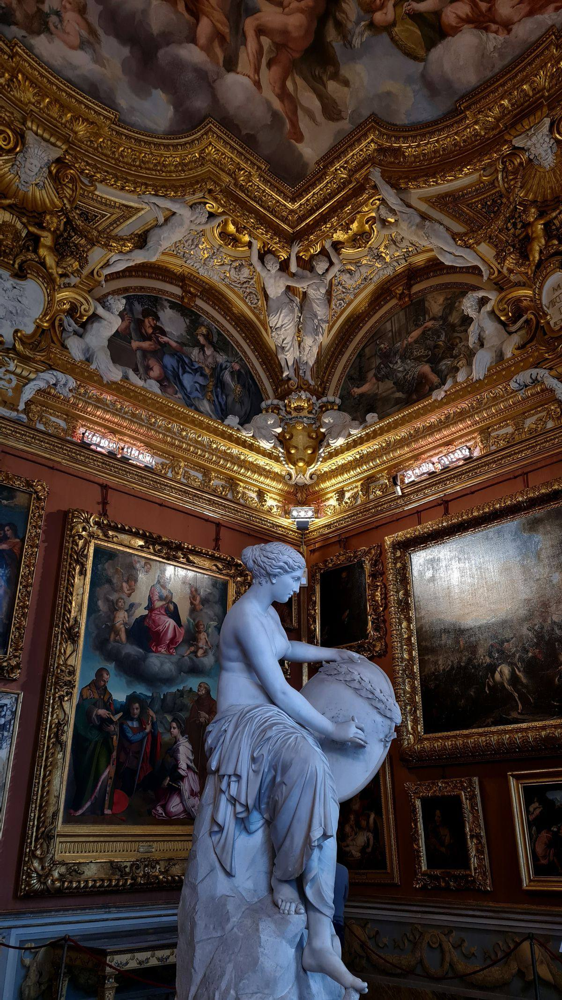

Живопись и скульптура
Не для коллекционного снобизма, а для развития глаза, меры и понимания формы.
Art
Живопись, театр, музыка, скульптура и кино становятся частью внутреннего каркаса вкуса. Не ради культурной позы, а чтобы взгляд становился тоньше, речь — глубже, а выбор — точнее.

Не для коллекционного снобизма, а для развития глаза, меры и понимания формы.
Не как вечерняя формальность, а как способ настраивать слух, ритм и качество внутреннего внимания.
Фильмы как часть разговора о типах характеров, эпохах, выборе и культурных кодах поведения.
Культурный слой делает речь спокойнее, точнее и естественнее в более сильной социальной среде.